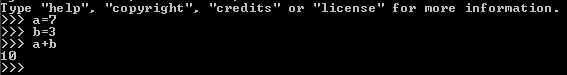
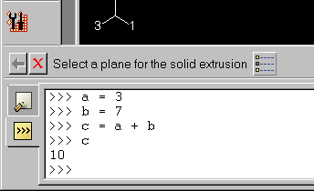

Using the Python interpreter#
Python is an interpreted language. This means you can type a statement and view the results without having to compile and link your scripts. Experimenting with Python statements is quick and easy. You are encouraged to try the examples in these tutorials on your workstation, and you should feel free to experiment with your own variations. To run the Python interpreter, do one of the following:
If you have Abaqus installed on your Linux or Windows workstation, type abaqus python at the system prompt. Python enters its interpretive mode and displays the >>> prompt.

You can enter Python statements at the >>> prompt. To see the value of a variable or expression, type the variable name or expression at the Python prompt. To exit the Python interpreter, type Ctrl + D on Linux systems or Ctrl + Z + Enter on Windows systems.
You can also use Python to run a script directly by typing abaqus python scriptname.py at the system prompt. Abaqus will run the script through the Python interpreter and return you to the system prompt. For an example of running a Python script using Abaqus, see Creating functions.
You can also use the Python interpreter provided in the command line interface by Abaqus/CAE. The command line is at the bottom of the Abaqus/CAE window and is shared with the message area. Abaqus/CAE displays the Python >>> prompt in the command line interface.
Click in the lower left corner of the main window to display the command line interface. You may want to drag the handle at the top of the command line interface to increase the number of lines displayed.

If Abaqus/CAE displays new messages while you are using the command line interface, the message area tab turns red.
{kind=link}
{kind=link}
{kind=link}